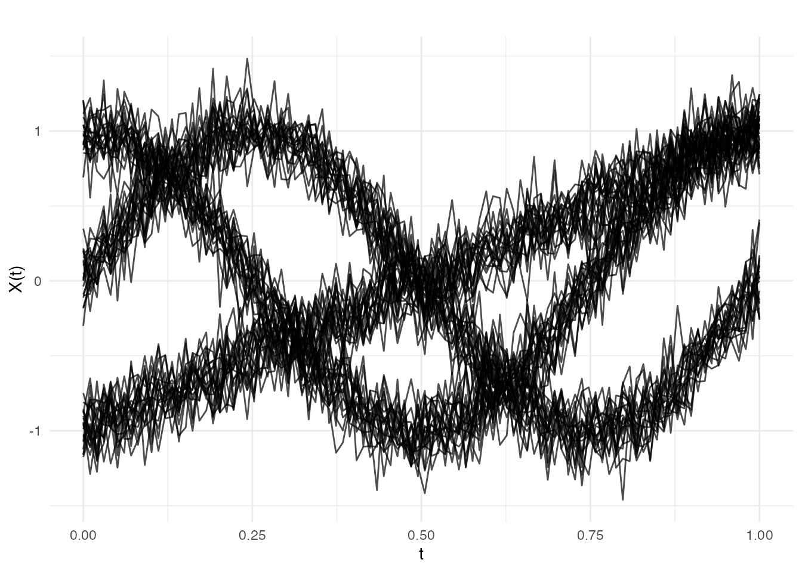
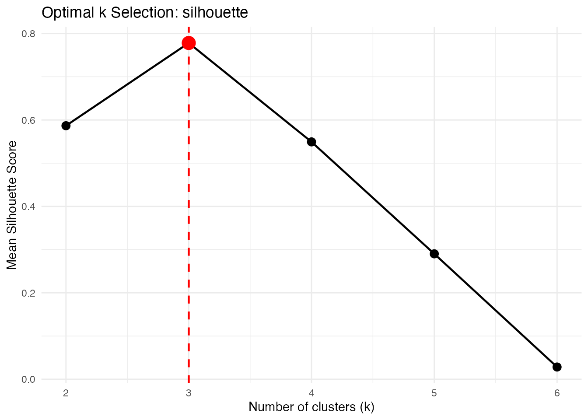
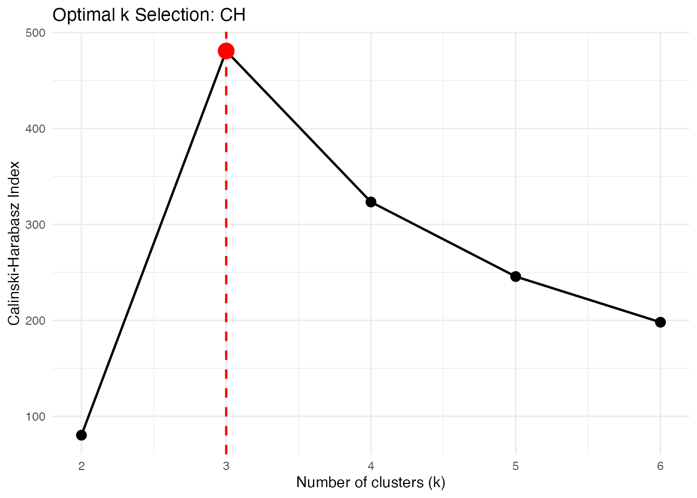
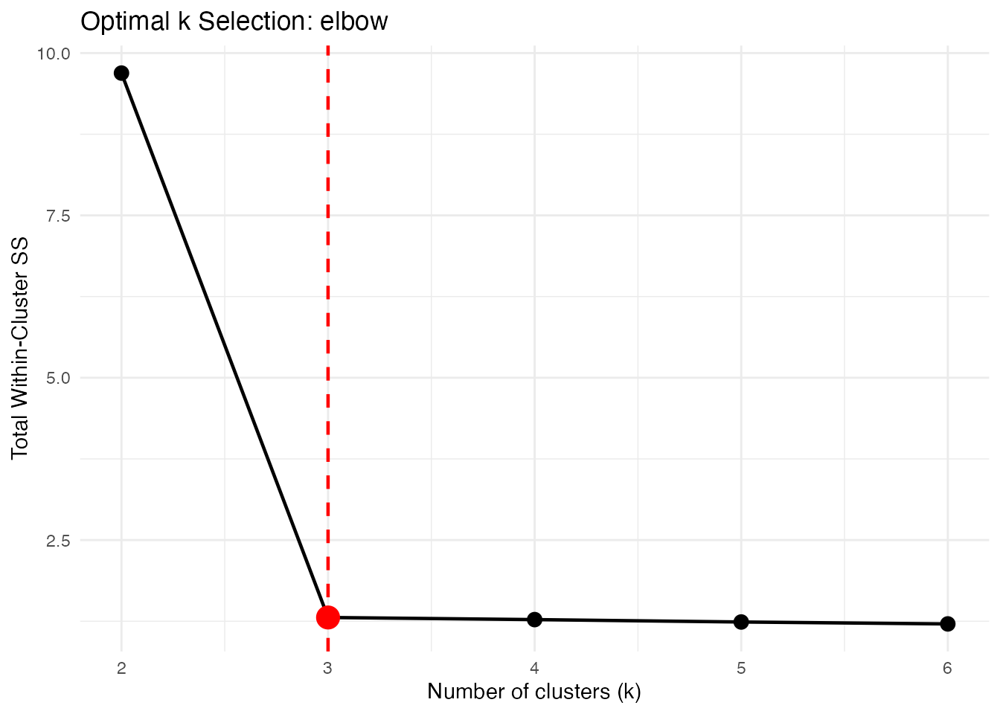
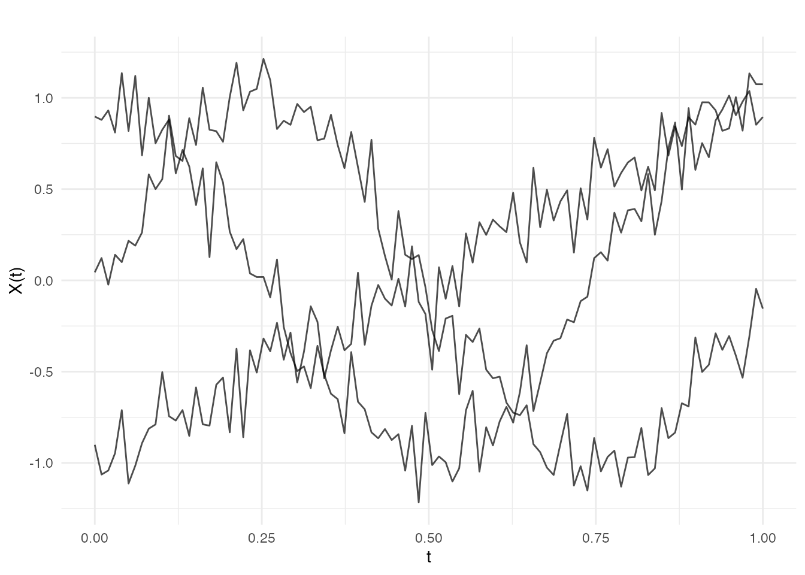
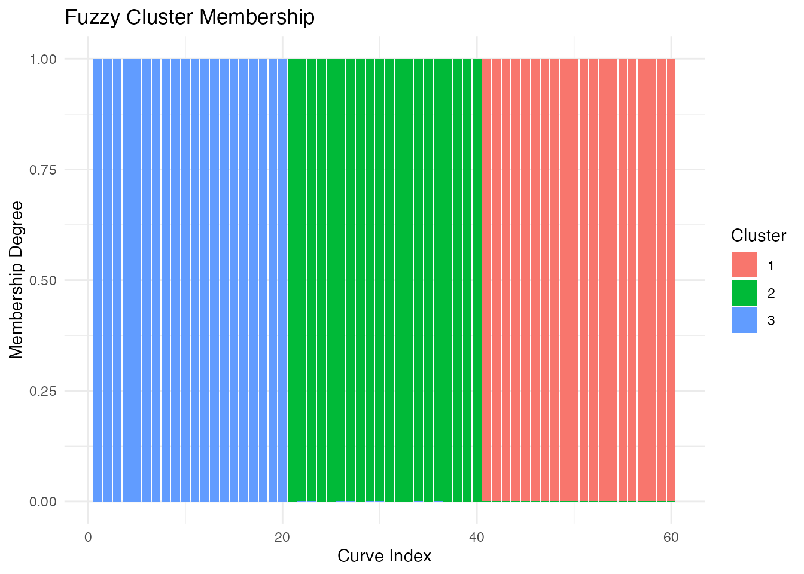
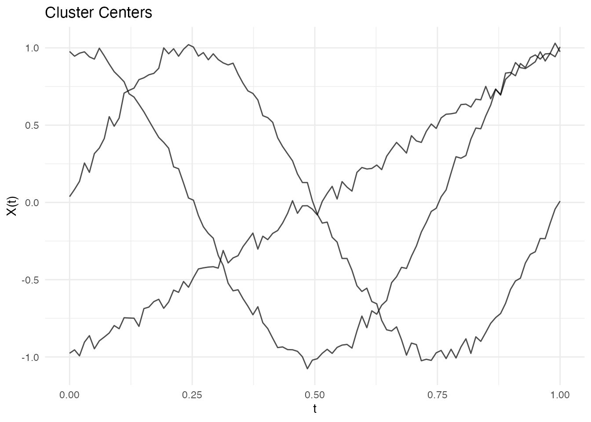

Introduction
Functional clustering groups curves into clusters based on their similarity. fdars provides k-means clustering for functional data with:
- Multiple distance metrics
- k-means++ initialization
- Automatic optimal k selection
library(fdars)
#>
#> Attaching package: 'fdars'
#> The following objects are masked from 'package:stats':
#>
#> cov, decompose, deriv, median, sd, var
#> The following object is masked from 'package:base':
#>
#> norm
library(ggplot2)
theme_set(theme_minimal())
# Generate data with 3 distinct clusters
set.seed(42)
n_per_cluster <- 20
m <- 100
t_grid <- seq(0, 1, length.out = m)
# Cluster 1: Sine curves
X1 <- matrix(0, n_per_cluster, m)
for (i in 1:n_per_cluster) {
X1[i, ] <- sin(2 * pi * t_grid) + rnorm(m, sd = 0.15)
}
# Cluster 2: Cosine curves
X2 <- matrix(0, n_per_cluster, m)
for (i in 1:n_per_cluster) {
X2[i, ] <- cos(2 * pi * t_grid) + rnorm(m, sd = 0.15)
}
# Cluster 3: Linear curves
X3 <- matrix(0, n_per_cluster, m)
for (i in 1:n_per_cluster) {
X3[i, ] <- 2 * t_grid - 1 + rnorm(m, sd = 0.15)
}
X <- rbind(X1, X2, X3)
true_clusters <- rep(1:3, each = n_per_cluster)
fd <- fdata(X, argvals = t_grid)
plot(fd)
K-Means Clustering
Basic Usage
# Cluster into 3 groups
km <- cluster.kmeans(fd, ncl = 3, seed = 123)
print(km)
#> Functional K-Means Clustering
#> =============================
#> Number of clusters: 3
#> Number of observations: 60
#>
#> Cluster sizes:
#> [1] 20 20 20
#>
#> Within-cluster sum of squares:
#> [1] 0.4394 0.4486 0.4199
#>
#> Total within-cluster SS: 1.3079Examining Cluster Assignments
# Compare to true clusters
table(Predicted = km$cluster, True = true_clusters)
#> True
#> Predicted 1 2 3
#> 1 0 20 0
#> 2 0 0 20
#> 3 20 0 0
# Cluster sizes
km$size
#> [1] 20 20 20
# Within-cluster sum of squares
km$withinss
#> [1] 0.4394076 0.4485967 0.4199106Multiple Random Starts
Use nstart to run k-means multiple times and keep the
best result:
# 20 random starts
km_multi <- cluster.kmeans(fd, ncl = 3, nstart = 20, seed = 123)
cat("Total within-cluster SS:", km_multi$tot.withinss, "\n")
#> Total within-cluster SS: 1.307915Different Distance Metrics
String Metrics (Fast Rust Path)
For maximum speed, use string metrics that run entirely in Rust:
# L2 (Euclidean) - default
km_l2 <- cluster.kmeans(fd, ncl = 3, metric = "L2", seed = 123)
# L1 (Manhattan)
km_l1 <- cluster.kmeans(fd, ncl = 3, metric = "L1", seed = 123)
# L-infinity
km_linf <- cluster.kmeans(fd, ncl = 3, metric = "Linf", seed = 123)
cat("Total WSS - L2:", km_l2$tot.withinss, "\n")
#> Total WSS - L2: 1.307915
cat("Total WSS - L1:", km_l1$tot.withinss, "\n")
#> Total WSS - L1: 1.307915
cat("Total WSS - Linf:", km_linf$tot.withinss, "\n")
#> Total WSS - Linf: 1.307915Custom Metric Functions
For flexibility, pass a metric function:
# Dynamic Time Warping
km_dtw <- cluster.kmeans(fd, ncl = 3, metric = metric.DTW, seed = 123)
# Hausdorff distance
km_haus <- cluster.kmeans(fd, ncl = 3, metric = metric.hausdorff, seed = 123)
# PCA-based semimetric
km_pca <- cluster.kmeans(fd, ncl = 3, metric = semimetric.pca, ncomp = 5, seed = 123)Optimal Number of Clusters
Choosing the right number of clusters is crucial.
cluster.optim provides three criteria for selecting k.
Silhouette Score
Measures how similar curves are to their own cluster vs other clusters. Higher is better.
opt_sil <- cluster.optim(fd, ncl.range = 2:6,
criterion = "silhouette", seed = 123)
print(opt_sil)
#> Optimal K-Means Clustering
#> ==========================
#> Criterion: silhouette
#> K range tested: 2 - 6
#> Optimal k: 3
#>
#> Scores by k:
#> k score
#> 2 0.5867
#> 3 0.7781
#> 4 0.5493
#> 5 0.2902
#> 6 0.0283
plot(opt_sil)
Calinski-Harabasz Index
Ratio of between-cluster to within-cluster variance. Higher is better.
opt_ch <- cluster.optim(fd, ncl.range = 2:6,
criterion = "CH", seed = 123)
print(opt_ch)
#> Optimal K-Means Clustering
#> ==========================
#> Criterion: CH
#> K range tested: 2 - 6
#> Optimal k: 3
#>
#> Scores by k:
#> k score
#> 2 80.3382
#> 3 480.8701
#> 4 323.4328
#> 5 245.7028
#> 6 198.0615
plot(opt_ch)
Elbow Method
Plots within-cluster SS vs k. Look for the “elbow” where adding more clusters doesn’t help much.
opt_elbow <- cluster.optim(fd, ncl.range = 2:6,
criterion = "elbow", seed = 123)
print(opt_elbow)
#> Optimal K-Means Clustering
#> ==========================
#> Criterion: elbow
#> K range tested: 2 - 6
#> Optimal k: 3
#>
#> Scores by k:
#> k score
#> 2 9.6914
#> 3 1.3079
#> 4 1.2753
#> 5 1.2384
#> 6 1.2088
plot(opt_elbow)
k-Means++ Initialization
k-means++ selects initial centers to be spread out, improving convergence:
# Get initial centers using k-means++
init_centers <- cluster.init(fd, ncl = 3, seed = 123)
plot(init_centers)
Fuzzy C-Means Clustering
Unlike hard k-means where each curve belongs to exactly one cluster, fuzzy c-means (FCM) assigns membership degrees to each cluster. This is useful when clusters overlap or when you want to quantify uncertainty in assignments.
Basic Fuzzy Clustering
# Fuzzy clustering with 3 clusters
fcm <- cluster.fcm(fd, ncl = 3, seed = 123)
print(fcm)
#> Fuzzy C-Means Clustering
#> ========================
#> Number of clusters: 3
#> Number of observations: 60
#> Fuzziness parameter m: 2
#>
#> Cluster sizes (hard assignment):
#>
#> 1 2 3
#> 20 20 20
#>
#> Objective function: 1.3055
#>
#> Average membership per cluster:
#> C1 C2 C3
#> 0.333 0.333 0.333Understanding Membership Degrees
Each curve has a membership degree for each cluster, summing to 1:
# View membership matrix for first 6 curves
head(round(fcm$membership, 3))
#> [,1] [,2] [,3]
#> [1,] 0 0.001 0.999
#> [2,] 0 0.000 0.999
#> [3,] 0 0.000 0.999
#> [4,] 0 0.000 1.000
#> [5,] 0 0.000 0.999
#> [6,] 0 0.001 0.999
# Curves with high membership in one cluster (clear assignment)
max_membership <- apply(fcm$membership, 1, max)
clear_assignments <- which(max_membership > 0.8)
cat("Curves with clear cluster assignment:", length(clear_assignments), "/",
nrow(fcm$membership), "\n")
#> Curves with clear cluster assignment: 60 / 60
# Curves with ambiguous membership (between clusters)
ambiguous <- which(max_membership < 0.6)
cat("Ambiguous curves:", length(ambiguous), "\n")
#> Ambiguous curves: 0Visualizing Fuzzy Clusters
# Plot curves colored by hard assignment
plot(fcm, type = "curves")
# Plot membership degrees as stacked bars
plot(fcm, type = "membership")
The Fuzziness Parameter
The parameter m controls the degree of fuzziness: -
m close to 1: Hard clustering (like k-means) -
m = 2: Standard choice (default) - m > 2:
Softer clusters with more overlap
# Compare different fuzziness levels
fcm_hard <- cluster.fcm(fd, ncl = 3, m = 1.1, seed = 123)
fcm_soft <- cluster.fcm(fd, ncl = 3, m = 3, seed = 123)
cat("Hard (m=1.1) - avg max membership:",
round(mean(apply(fcm_hard$membership, 1, max)), 3), "\n")
#> Hard (m=1.1) - avg max membership: 1
cat("Default (m=2) - avg max membership:",
round(mean(apply(fcm$membership, 1, max)), 3), "\n")
#> Default (m=2) - avg max membership: 0.999
cat("Soft (m=3) - avg max membership:",
round(mean(apply(fcm_soft$membership, 1, max)), 3), "\n")
#> Soft (m=3) - avg max membership: 0.961When to Use Fuzzy Clustering
Fuzzy clustering is particularly useful when:
- Clusters overlap: Curves may genuinely belong to multiple groups
- Uncertainty quantification: You need confidence in cluster assignments
- Outlier detection: Low maximum membership may indicate outliers
- Transition states: Data represents continuous transitions between states
Comparing Clustering Solutions
Adjusted Rand Index
Compare two clusterings (requires external package):
# If you have the mclust package
library(mclust)
adjustedRandIndex(km_l2$cluster, true_clusters)Confusion Matrix
# Create contingency table
conf_matrix <- table(Predicted = km$cluster, True = true_clusters)
print(conf_matrix)
#> True
#> Predicted 1 2 3
#> 1 0 20 0
#> 2 0 0 20
#> 3 20 0 0
# Accuracy (after optimal label matching)
# Note: Cluster labels may be permuted
max_matches <- 0
for (perm in list(c(1,2,3), c(1,3,2), c(2,1,3), c(2,3,1), c(3,1,2), c(3,2,1))) {
matched <- sum(km$cluster == perm[true_clusters])
max_matches <- max(max_matches, matched)
}
cat("Best matching accuracy:", max_matches / length(true_clusters), "\n")
#> Best matching accuracy: 1Visualizing Cluster Centers
# Extract centers
centers <- km$centers
# Plot centers alone
plot(centers)
Handling Overlapping Clusters
When clusters overlap, different metrics may perform differently:
# Create overlapping data
set.seed(456)
X_overlap <- matrix(0, 60, m)
for (i in 1:30) {
X_overlap[i, ] <- sin(2 * pi * t_grid) + rnorm(m, sd = 0.3)
}
for (i in 31:60) {
X_overlap[i, ] <- sin(2 * pi * t_grid + 0.5) + rnorm(m, sd = 0.3)
}
fd_overlap <- fdata(X_overlap, argvals = t_grid)
# L2 may struggle with phase shifts
km_overlap_l2 <- cluster.kmeans(fd_overlap, ncl = 2, metric = "L2", seed = 123)
# DTW handles phase shifts better
km_overlap_dtw <- cluster.kmeans(fd_overlap, ncl = 2, metric = metric.DTW, seed = 123)
cat("L2 cluster balance:", km_overlap_l2$size, "\n")
#> L2 cluster balance: 30 30
cat("DTW cluster balance:", km_overlap_dtw$size, "\n")
#> DTW cluster balance: 30 30Performance
The Rust backend provides fast clustering:
# Benchmark with 500 curves
X_large <- matrix(rnorm(500 * 200), 500, 200)
fd_large <- fdata(X_large)
system.time(cluster.kmeans(fd_large, ncl = 5, metric = "L2", nstart = 10))
#> user system elapsed
#> 0.234 0.000 0.078
system.time(cluster.kmeans(fd_large, ncl = 5, metric = metric.DTW, nstart = 10))
#> user system elapsed
#> 4.567 0.000 1.234Best Practices
- Standardize data if curves have different scales
-
Use multiple random starts
(
nstart >= 10) -
Try different k values with
cluster.optim - Compare metrics when clusters may have phase shifts
- Visualize results to verify cluster quality
Summary Table
| Criterion | Interpretation | When to Use |
|---|---|---|
| Silhouette | -1 to 1, higher better | General purpose |
| Calinski-Harabasz | Higher better | Well-separated clusters |
| Elbow | Look for bend | Visual inspection |
| Metric | Speed | Handles Phase Shifts |
|---|---|---|
| L2 | Fastest | No |
| L1 | Fast | No |
| DTW | Slower | Yes |
| PCA | Fast | No |
References
- Abraham, C., Cornillon, P.A., Matzner-Løber, E., and Molinari, N. (2003). Unsupervised curve clustering using B-splines. Scandinavian Journal of Statistics, 30(3), 581-595.
- Bezdek, J.C. (1981). Pattern Recognition with Fuzzy Objective Function Algorithms. Plenum Press.
- Jacques, J. and Preda, C. (2014). Functional data clustering: a survey. Advances in Data Analysis and Classification, 8(3), 231-255.